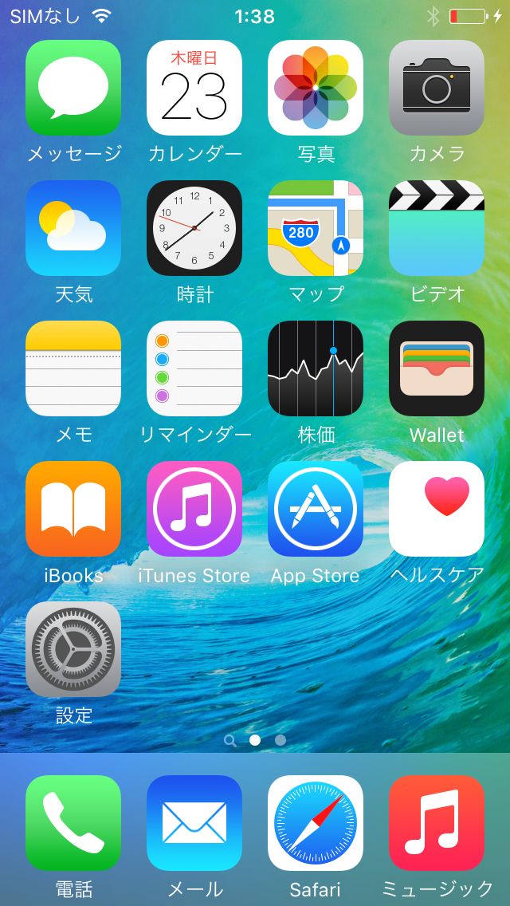
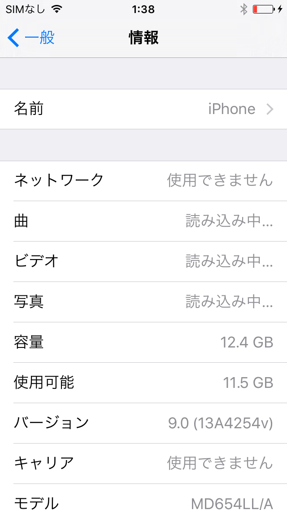
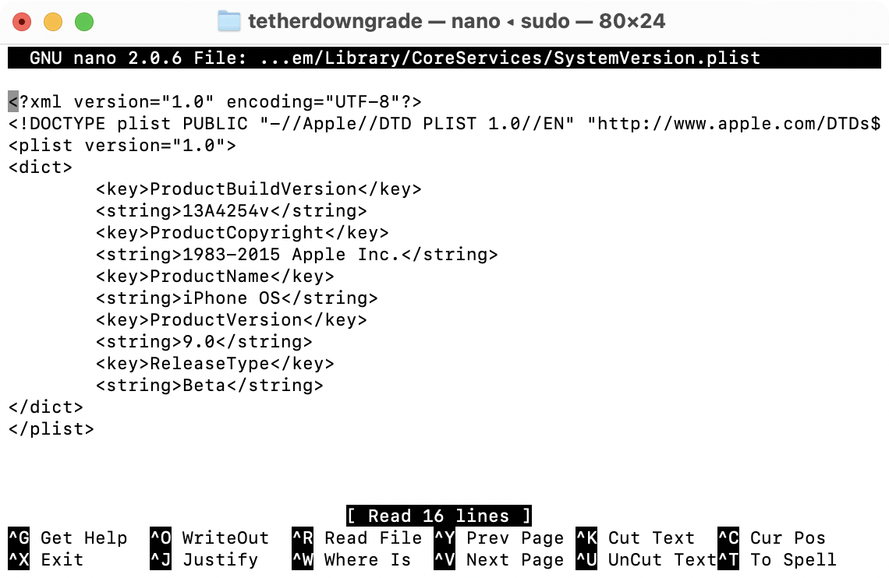
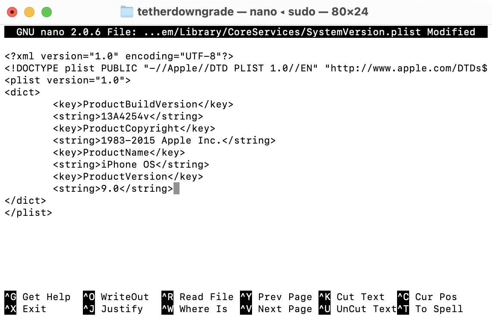
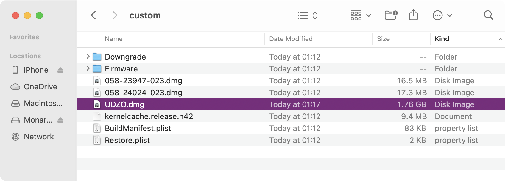
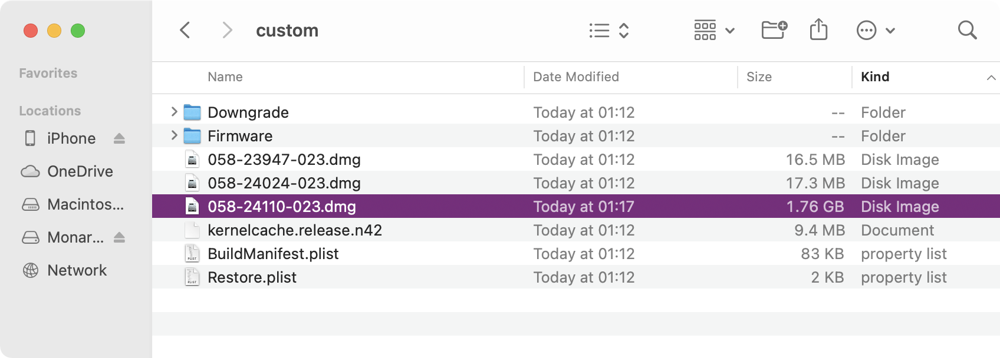
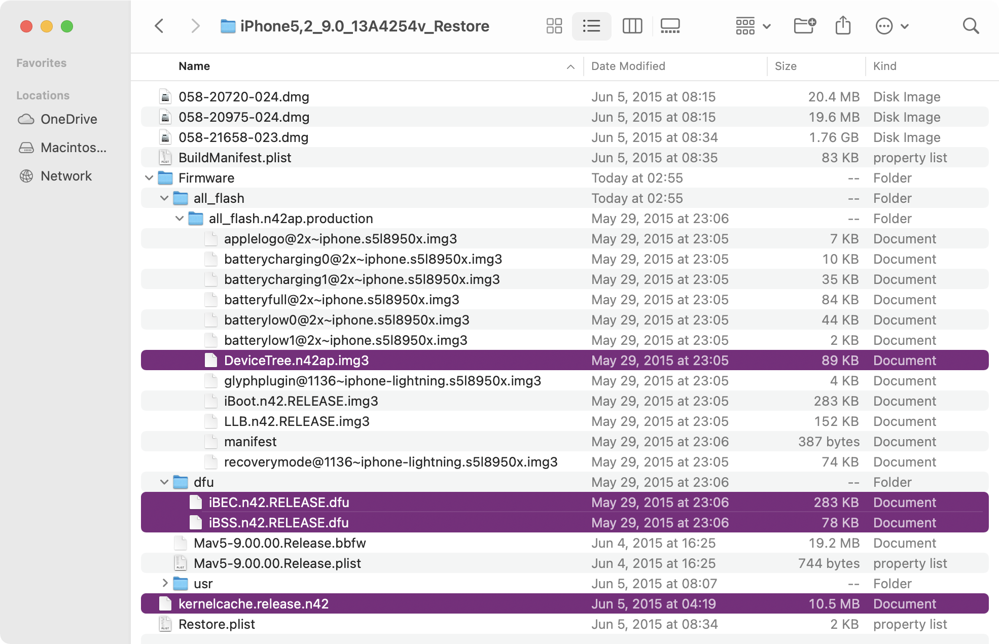
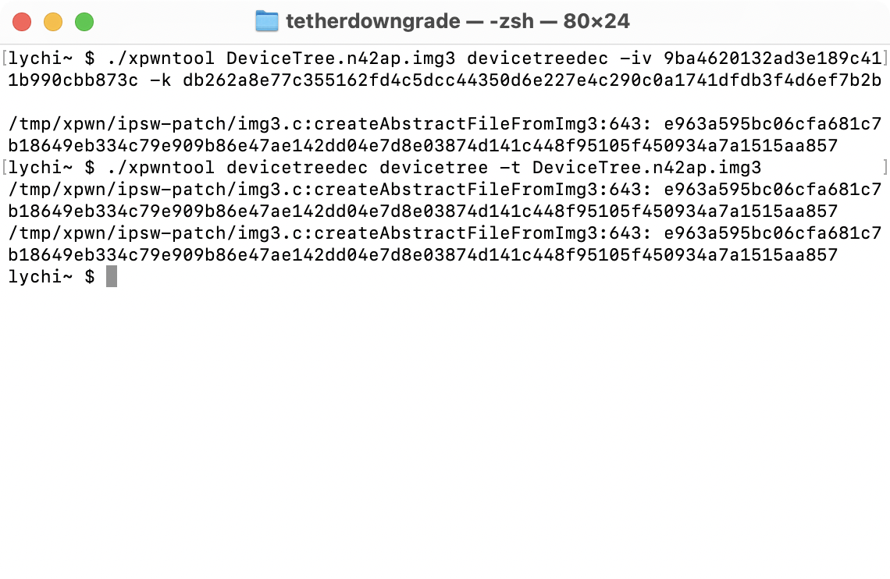

Presenting another useless tethered downgrade tutorial. I'm pretty sure this method has already been detailed before, but I'm sharing it again, I guess. This tutorial is primarily for Beta Firmwares. If you're not attempting to install beta firmware, I advise you use n1ghtshade.
 odysseusOTA2
odysseusOTA2 bundles for other devices
dmg from xpwn
xpwntool from xpwn
iBoot32Patcher (mine is from dora2-iOS)
ipwnder_lite (dora2-iOS)
Firmware keys for target firmware
Older version of futurerestore
libirecovery (brew)
Extract everything into a folder. I titled my folder tetherdowngrade but it does not matter what it is titled.
Open a terminal window within the folder, and create a custom 8.4.1 firmware for your device. Out of the box, odysseusOTA2 has support for the iPhone 5 (GSM), iPhone 5 (Global), and iPhone 4S. Support for other A5 and A6 devices (except iPhone 5C) can be added with custom firmware bundles.
The command to create the custom firmware:
./ipsw iPhone5,2_8.4.1_12H321_Restore.ipsw custom.ipsw -memory -bbupdate
After the custom firmware is created, extract the rootfs of your target firmware. The name of the rootfs dmg can be found on the corresponding Firmware Keys page for the target version.
For iPhone5,2 9.0b1, the command to extract the rootfs:
unzip iPhone5,2_9.0_13A4254v_Restore.ipsw 058-21658-023.dmg
After the dmg is extracted, decrypt the rootfs using xpwn’s dmg. The key can be found at the same Firmware Keys page.
For iPhone5,2 9.0b1, the command to decrypt the rootfs:
./dmg extract 058-21658-023.dmg decrypted.dmg -k daf695058c94cb990778548466014d3895982799bdc2fa4451e1f5aec3d1024552eb1600
The next few steps are for Beta firmware only. Beta firmware have a string in the SystemVersion.plist that prevents them from being activated. Fortunately, it is easily removable, and the firmwares can be activated like any other release firmware.
To edit SystemVersion.plist, mount decrypted.dmg. Then, within the volume, navigate to /System/Library/CoreServices. Within this folder lies SystemVersion.plist.
Using a text editor with sudo, in this case, nano, open the plist file.
Now remove the following:
<key>ReleaseType</key>
<string>Beta</string>
This is what it should look like after.
The following steps are back to being applicable for every firmware.
Convert the decrypted dmg to the UDZO format using xpwn’s dmg. If the rootfs is not in the UDZO format, the restore will fail prematurely. Do not forget this step.
The command to convert the decrypted dmg to UDZO:
./dmg build decrypted.dmg UDZO.dmg
Next, unzip the custom 8.4.1 firmware (custom.zip) and delete the 8.4.1 rootfs. In this case, it is titled 058-24110-023.dmg
Move the UDZO.dmg into the unzipped custom firmware.
Rename the UDZO.dmg to the name of the original 8.4.1 rootfs. The name can be found on the Firmware Keys page if the original name was forgotten. Make sure the name matches. The restore will not go through if the UDZO.dmg is not named properly.
Compress the files within the folder into a zip.
Move the zip back to the main folder, and delete the custom folder. The original 8.4.1 IPSW, the custom 8.4.1 IPSW, the target firmware rootfs, and decrypted.dmg can also be deleted.
Back in Terminal, grab shsh blobs. Make sure the device is plugged in before running the command.
The command to grab shsh blobs is
./idevicerestore -t Archive.zip
Put the device into DFU mode. Then, using ipwnder_lite, put the device into pwned DFU mode.
./ipwnder_lite -p
Restore the device:
./idevicerestore -w -e -d Archive.zip
I have encountered issues with certain target firmwares where ASR would fail to verify the filesystem. If you see “Filesystem Validated” and idevicerestore proceeds to send the filesystem, this is not an issue. For the versions where ASR does fail, I have not found a fix quite yet.
After the restore finishes, the device will perpetually hang on an Apple logo. This is where the tethered component comes in. The device needs to be manually booted with a computer, or it will continue to hang on the logo. If the device is rebooted, then a computer will be required to boot it.
The following steps are not required if the target firmware is a release firmware. The device can be booted using futurerestore.
The command to boot:
./futurerestore_macos —just-boot=“-v” —use-pwndfu <targetfirmware.ipsw>
To boot beta firmwares, the boot files will manually be created.
To begin, unzip the target beta firmware and extract iBSS, iBEC, DeviceTree, and kernelcache
Using xpwntool, decrypt the iBSS file. The IV and Key can be found at the Firmware Keys page.
. /xpwntool iBSS.n42.RELEASE.dfu ibssdec -iv 5e2bf5290fa084684c443ea6b351e56a -k b2a3c8a863e8e55ec0a9092d2ca62c0fb8901a6136840f84a87d8e212b3dleb1
Patch iBSS using iBoot32Patcher.
./iBoot32Patcher ibssdec ibsspwn --rsa
Rebuild the iBSS using xpwntool
./xpwntool ibsspwn iBSS -t iBSS.n42.RELEASE.dfu
Using xpwntool, decrypt the iBEC file. The IV and Key can be found at the Firmware Keys page.
./xpwntool iBEC.n42.RELEASE.dfu ibecdec -iv 7124c7d637851865abc3064d4bb64d16 -k 02917e966a72380a0f287393e5627503f4673a852c4cdd786fac104579eb4aa
Patch iBEC using iBoot32Patcher.
./iBoot32Patcher ibecdec ibecpwn --rsa --ticket -b “-v”
Rebuild the iBEC using xpwntool
./xpwntool ibecpwn iBEC -t iBSS.n42.RELEASE.dfu
Finally, decrypt the DeviceTree using xpwntool.
./xpwntool DeviceTree.n42ap.img3 devicetreedec -iv 9ba4620132ad3e189c411b990cbb873c -k db262a8e77c355162fd4c5dcc44350d6e227e4c290c0a1741dfdb3f4d6ef7b2b
Rebuild the decrypted DeviceTree
./xpwntool devicetreedec devicetree -t DeviceTree.n42ap.img3
Finally, boot using irecovery.
Run the following commands in this order after the device is in pwned DFU mode
irecovery -f ibss
irecovery -f ibec
irecovery -f devicetree
irecovery -c devicetree
irecovery -f kernelcache.release.n42
irecovery -c bootx
The device will now boot, and you will be able to set up and activate it.
-lychi (2022)